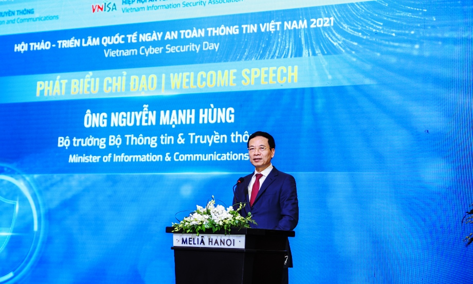
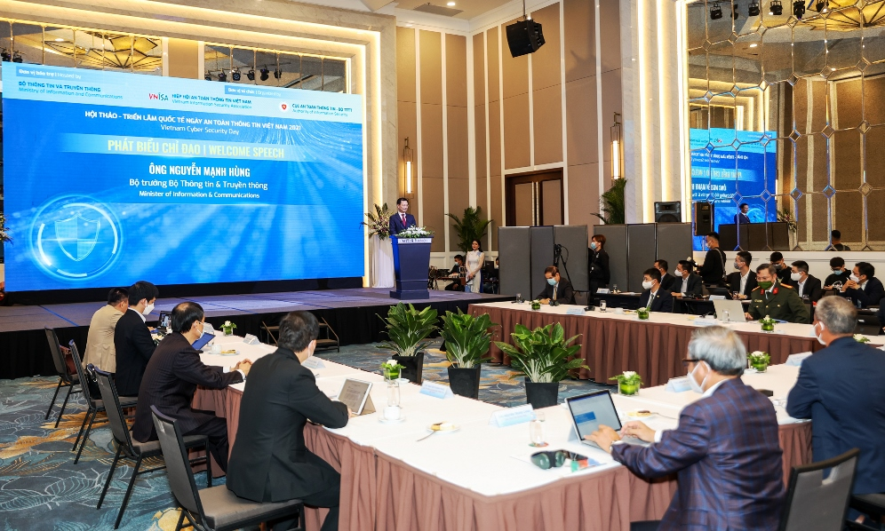

With the theme “Information security in digital transformation – challenges and solutions”, the International Conference and Exhibition of Vietnam Cyber Security Day 2021 was held on November 25th 2021 in the form of onsite – online combination, which the main bridge point at Melia hotel – Hanoi, has been successfully organized.


The conference was honored to be attended by Mr. Nguyen Manh Hung – Minister of Information and Communications. Guests include many leader of ministries, sectors and localities; specialized units of information security/ IT of ministries, sectors, localities, corpotations, state corporations, associations, universities, banks, financial institutions…. Besides the conference is an online exhibition with nearly 30 booths introducing advanced information security technology solutions of domestic and foreign enterprises (https://exhibition.securityday.vn/).
The conference consists of the whole morning session and the afternoon symposium session with the participation of nearly 30 speakers who are leaders of state management agencies, well-known experts on international information security and experts of large domestic and foreign companies.
This is the 14th annual event, hosted by the Vietnam Information Security Association (VNISA), in coordination with the Information Security Department (Ministry of Information and Communications), under the sponsorship of the Ministry of Information and Communications.